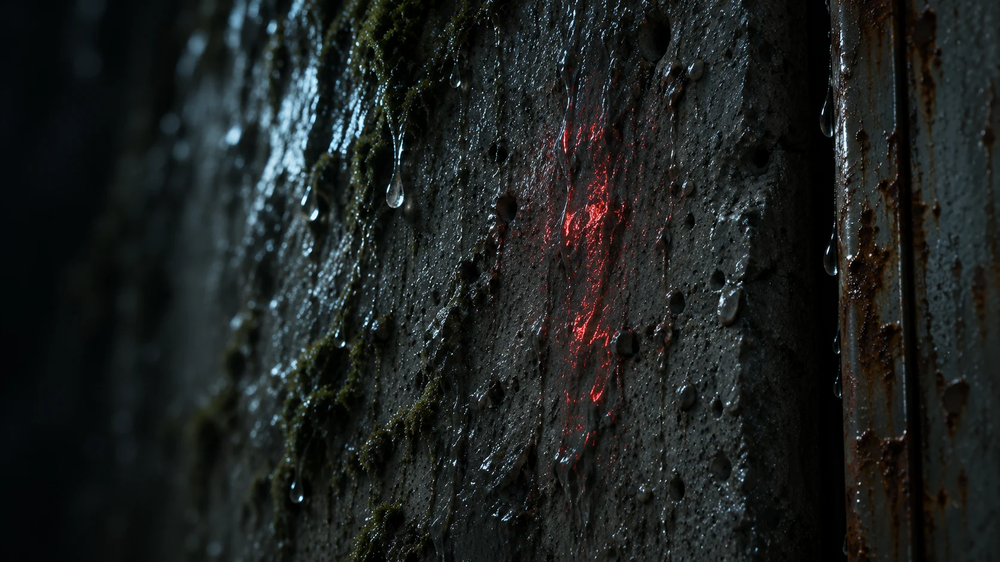
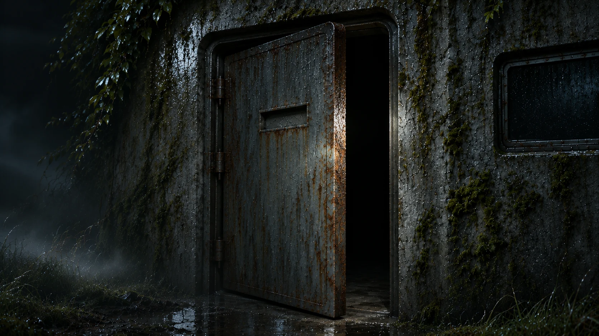

Джуна растёрла большим пальцем красную полоску на запястье и взяла камеру у Вадима. Он разжал пальцы, только когда почувствовал, что она держит крепко. Кристиан убрал ладонь от дисплея. Стекло сразу побелело от света фары, и Вадим увидел в нём собственное лицо. Какое-то время ему было легче смотреть на это скверное отражение, чем на то, что было под ним.
— Спасибо, — сказала Джуна.
Она повесила камеру на шею. Кристиан уже собирался отойти к машине, когда Лиана окликнула его:
— Крис, посвети мне ещё раз. Низко, чтобы было видно, куда ступить.
Он провёл лучом по полосе травы до самого косяка. Лиана вернулась туда, где несколько минут назад уловила сигнал. Вадим пошёл следом. Место, на котором он стоял, когда Джуна его снимала, оказалось совсем близко. Отсюда развилку на стене можно было накрыть ладонью. Он прошёл мимо, не притронувшись.
— Хочу послушать ещё раз, — сказала Лиана. — Если он повторится, засеките время.
— По камере? — спросила Джуна.
— Да. Чтобы потом можно было сравнить.
Джуна вывела на экран часы. Вадиму вспомнился их разговор в кабине. Ему тогда так хотелось, чтобы ещё хоть один человек почувствовал запах горелой меди. Теперь Джуна стояла рядом с пальцем над кнопкой, готовая засечь секунду для Лианы. Она тогда принюхалась, прежде чем ответить. Эта маленькая пауза почему-то запомнилась ему лучше её ответа.
Лиана приложила ладонь к бетону слева от двери. Синий отсвет от её глаз лёг на мокрый косяк.
— Анализ заверш…
Плечо у неё дёрнулось. Вадим успел подхватить её под локоть. Ладонь ещё лежала на прежнем месте, а голова склонилась набок, словно Лиана пыталась прижать ухо к стене. Её глаза мигнули и засветились красным. По каплям на бетоне пробежал такой же отблеск.
Затрещало так близко, что Вадим машинально коснулся наушника. Треск донёсся снова, со стороны стены. Губы Лианы шевельнулись у самого его плеча. Заговорил мужчина. Голос был низкий, хриплый, и первые слова уже пропали в помехах.
— …мы не первые, кто сюда дошёл. И не последние, кто здесь умрёт.

Последнее слово прозвучало чисто. В наступившей тишине Вадим услышал, как Кристиан втянул носом воздух.
Джуна вслух назвала время. С первого раза Вадим разобрал только минуты. Секунды она повторила уже тише, для себя.
Лиана отняла ладонь от стены. Глаза у неё снова светились синим.
— Вадим, ты мне руку держишь.
Он отпустил. Она согнула локоть, расправила пальцы. Голос был её, знакомый до мелочей. Минуту назад таким же голосом она попросила Криса посветить.
— Ты слышала, что сказала? — спросил он.
— Я начала говорить об анализе. А что вы услышали?
Джуна повторила фразу слово в слово. Кристиан под конец беззвучно шевельнул губами вместе с ней. Лиана выслушала до конца.
— Похоже на сбой лингвистического буфера. Я могла поймать старую радиопередачу. Бывает, что сигнал возвращается, отразившись от ионосферы.
— Ты ведь сказала «мы», — тихо произнёс Кристиан.
— Это я сказала, — отозвалась Джуна. — Когда повторяла. Почему ты меня не спрашиваешь, кого я имела в виду?
Кристиан посмотрел на неё. Потом на Лиану.
— Потому что я слышал, за кем ты повторяешь. А тебя, Лиан… Я бы его узнал, если бы снова услышал. Мужика этого. — Он повёл рукой с фонарём, и свет скользнул по её сапогам. — А ты не узнаешь?
— Мне придётся спросить тебя.
Кристиан опустил фонарь. Вадим ждал от него шутки. Тот молча поправил ремешок на рукояти. Через секунду принялся поправлять его снова.
— Есть ещё кое-что, — сказала Лиана. — Дверь разблокирована.
Джуна обернулась. Створка по-прежнему плотно прилегала к раме. У ног Вадима по лужице прошла мелкая рябь — вдали опять загудел вулкан.
— И давно? — спросил он.
— Сейчас могу сказать, что замок отпущен. Когда вы смотрели фотографию, я стояла вместе с вами.
Вадим кивнул. Так же честно она ответила Джуне про пропущенный замер. Вадим хотел спросить её ещё о чём-то, но всякий раз сбивался на одно и то же слово. «Умрёт».
— У нас в машине сухо, — сказал Кристиан. — Можно сесть, закрыть дверь и поговорить. Я бы, например, с удовольствием послушал, как вы меня уговариваете сюда вернуться.
— А что сказать-то? — спросил Вадим.
— Ну, хоть зачем тебе туда.
Вадим взглянул на прорезь в створке. Когда они сидели в Пулково над картой, у него был обстоятельный ответ. Две схемы, один вход. Кто-то ошибся при съёмке, а они проверят. Сейчас перед ним стоял Крис, который у двери признался, какую из двух схем предпочёл бы. Отговориться архивными бумагами Вадиму вдруг стало стыдно.
— Крышу я узнал ещё из машины. Во сне видел. А что за дверью, хоть убей, не помню. Мне бы заглянуть, Крис. Даже если там голая стена.
— Тогда загляни, — сказал Кристиан после паузы. — А если позову, отзовись. Чтобы я тут опять не гадал, кто говорит.
У самого порога Вадим почувствовал сквозь рубашку короткий укол тепла. Вадим провёл рукой по куртке, почувствовал сквозь ткань зажигалку. Тепло уже прошло. Он поднял глаза. На уровне лица в железе чернела узкая горизонтальная прорезь. Чуть ниже и сбоку темнел клочок мха. Вадим отвёл его большим пальцем и прижал подушечку к гладкой пластинке.
Щёлкнуло. Он отдёрнул руку.
— Ты видел сенсор под мхом? — спросила Джуна.
— Теперь вижу.
Под рамой загудел привод. Правый край створки отошёл от косяка и пошёл на Вадима. Он отступил. Петли слева скрипнули, створка повернулась влево и замерла. Из узкого проёма справа потянуло холодом. Пахло старым железом.
Кристиан посветил через плечо Вадима. Луч лёг на ржавую кромку створки. Дальше была темнота. Между кромкой и правым косяком можно было протиснуться только боком.

— Возьми. — Кристиан протянул ему фонарь рукоятью вперёд. На этот раз Вадим оставил его у себя.
Джуна уступила ему место. Лиана стояла у левого косяка, и, проходя мимо, Вадим на секунду поймал её взгляд. Обычный мягкий синий свет. Он поднял фонарь к плечу и повернулся боком.